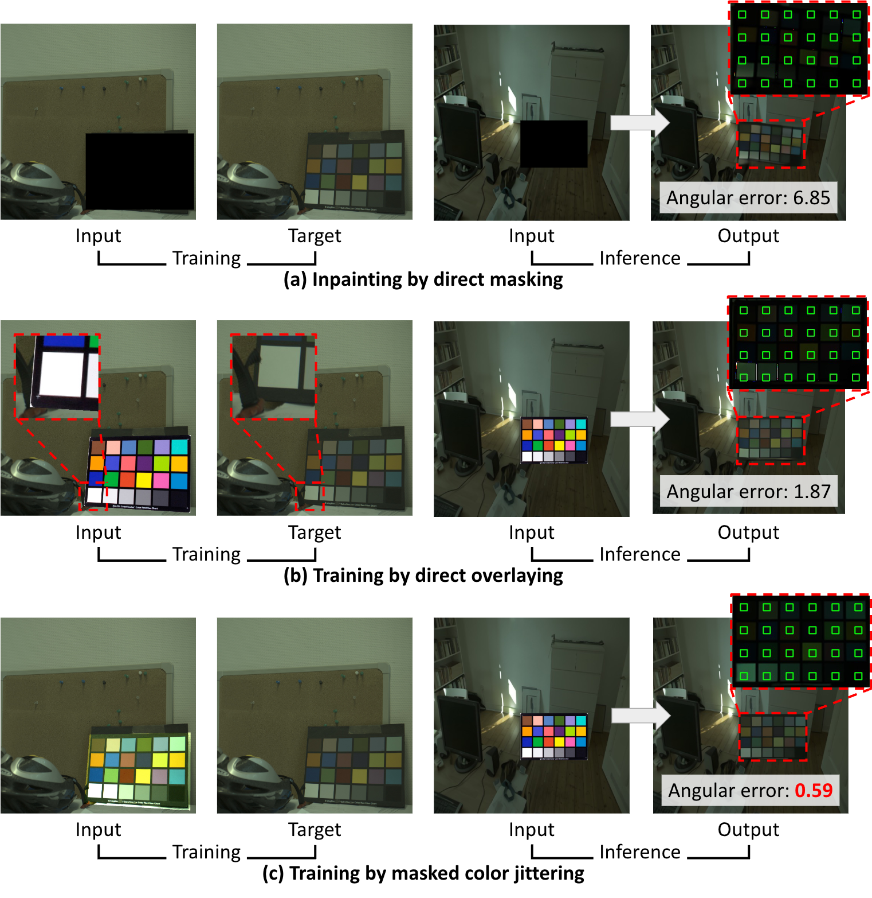

Color checker misalignment issue

Analysis of color checker alignment strategies. (a) Direct inpainting on masked regions leads to poor color checker structure. This is because we do not provide any guidance on the desired color checker structure, causing the model to generate contours that do not meet our expectations. (b) Using a homography transform to overlay a template suffers from pixel-level misalignment due to imprecise bounding box annotations. (c) Our mask color jittering approach overcomes corner point annotation limitations by allowing the model generate geometrically consistent color checker structures while accurately reflecting scene illumination.